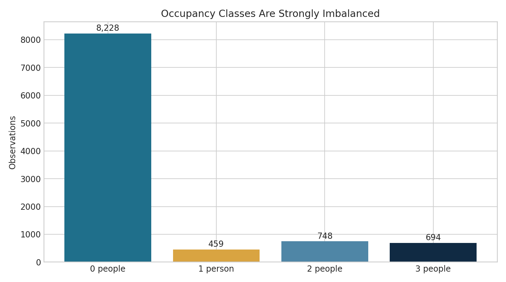
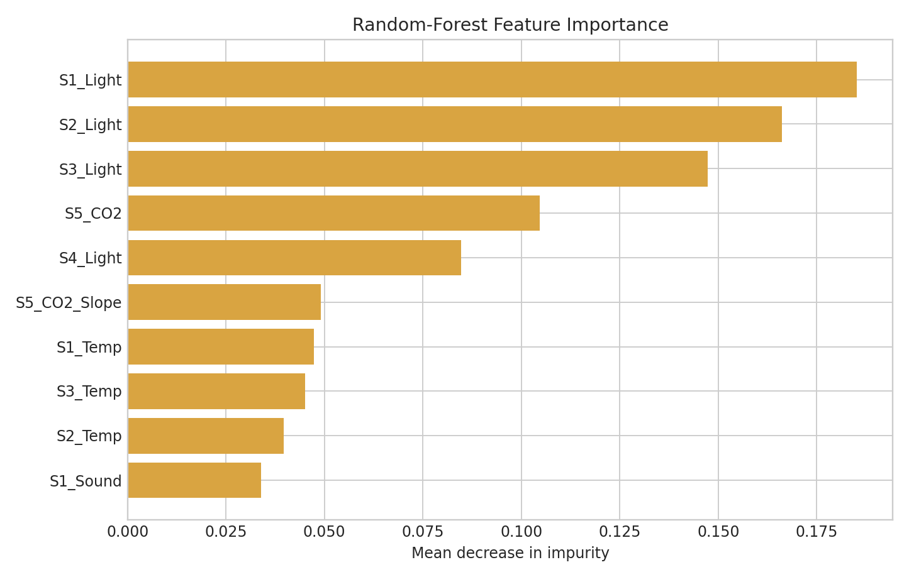
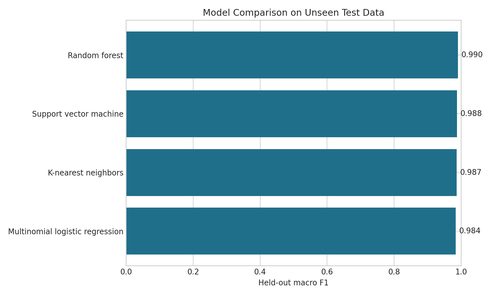
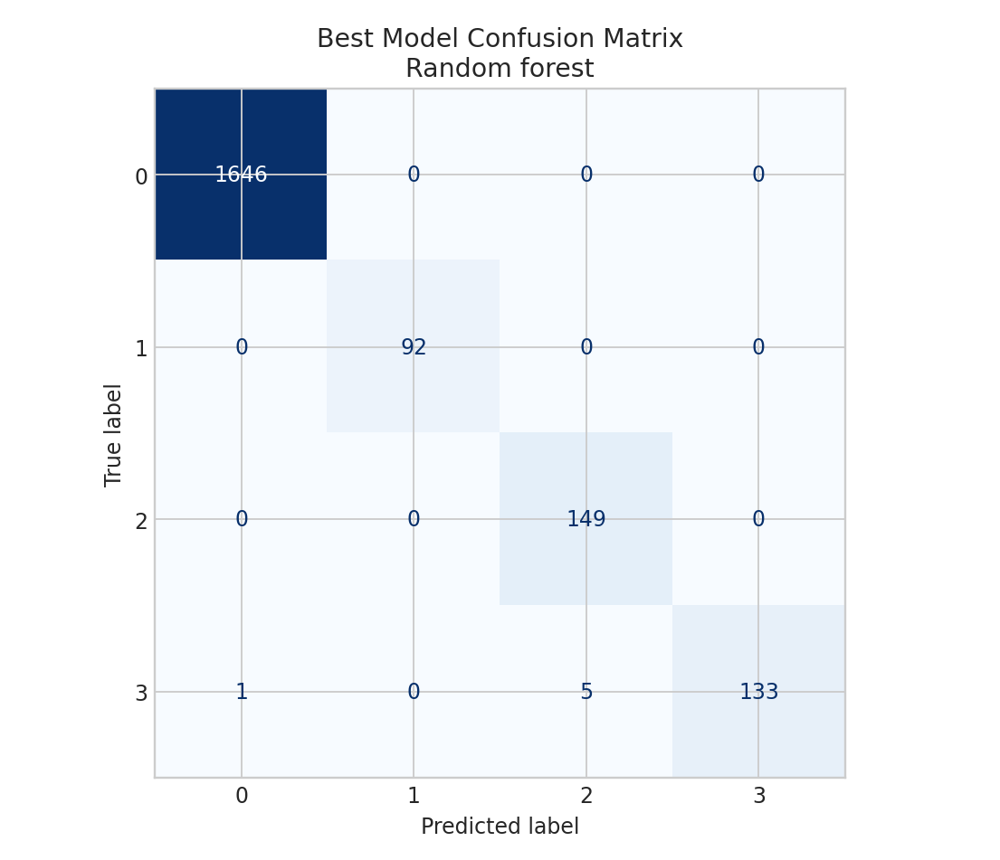

Data source
The official UCI Room Occupancy Estimation dataset contains 10,129 observations sampled every 30 seconds, 16 sensor predictors, and manually recorded occupancy counts from zero to three.
Final Project · End-to-End AI/ML
A reproducible multi-class machine-learning project that uses non-intrusive environmental sensors to estimate whether zero, one, two, or three people occupy a room.
Problem: Buildings waste energy when lighting and climate systems operate independently of actual occupancy. Objective: develop an auditable classifier that estimates room occupancy from temperature, light, sound, CO₂, CO₂ slope, and PIR motion readings, then translate the evidence into a cautious operational recommendation.
The official UCI Room Occupancy Estimation dataset contains 10,129 observations sampled every 30 seconds, 16 sensor predictors, and manually recorded occupancy counts from zero to three.
It is less overused than Iris, Titanic, or MNIST, represents a real smart-building problem, and supports classification, imbalance analysis, ethics, commercialization, and change leadership.
Compare multiple algorithms; report accuracy, macro F1, balanced accuracy, per-class results, and errors; preserve reproducibility; and state limits before deployment.
I defined the task as four-class classification, identified facilities teams as decision owners, and treated predictions as control recommendations rather than unquestionable commands.
I verified 10,129 rows, 16 sensor features, zero missing values, zero exact duplicates, valid labels, and a strong class imbalance: 8,228 empty-room records versus 459 one-person records.
I excluded Date and Time from predictors to reduce timestamp memorization, used a stratified 80/20 split, and fitted median imputation and scaling inside each training pipeline to prevent leakage.
I compared balanced multinomial logistic regression, distance-weighted KNN, class-weighted SVM, and class-balanced random forest.
I used stratified five-fold cross-validation on training data and one untouched held-out test set. Macro F1 and balanced accuracy were prioritized because ordinary accuracy can hide minority-class failure.
I examined the confusion matrix, per-class classification report, model comparison, and random-forest feature importance instead of relying on one score.




Occupancy estimates could support demand-based HVAC, lighting, room-use dashboards, and anomaly alerts without using cameras or facial recognition.
Facilities leaders receive measurable evidence to compare comfort, energy consumption, overrides, and false decisions during a controlled pilot.
Environmental sensors reduce surveillance risk, but sound and behavioral patterns can still reveal activity. Raw data should be minimized, access controlled, retention limited, and employees informed.
A false empty-room prediction could reduce ventilation or lighting while people are present. Safety and accessibility require conservative controls, manual overrides, and no adverse employee decisions from occupancy estimates.
I would involve facilities staff and room users, explain limits, run feedback sessions, train operators, document concerns, and define who can pause the system.
Track macro F1, minority-class recall, false-empty rate, energy use, comfort complaints, overrides, sensor failures, privacy incidents, adoption, and response time.
The data came from one 6 m × 4.6 m room under controlled conditions. Results may change with HVAC use, room geometry, sensor placement, calibration, seasons, or larger groups.
A stratified random split preserves rare classes but may overestimate generalization because nearby sensor readings are correlated. A future study should collect more occupied days and use day- or site-based holdouts.
Feature importance indicates association rather than causation. Random forests also need monitoring because sensor drift can silently change predictions.
Collect data across rooms and seasons; establish a majority-class baseline; tune models with nested validation; calibrate confidence; test sensor-ablation scenarios; and compare edge latency and energy savings.
Watch input ranges, missingness, class proportions, false-empty errors, confidence, and user overrides. Retrain only after reviewed drift and labeled evidence justify the change.
The project demonstrates data preparation, visualization, classical ML, comparison, evaluation, ethics, commercial application, and responsible change leadership in one auditable artifact.